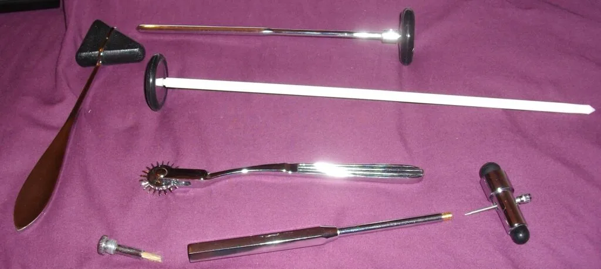
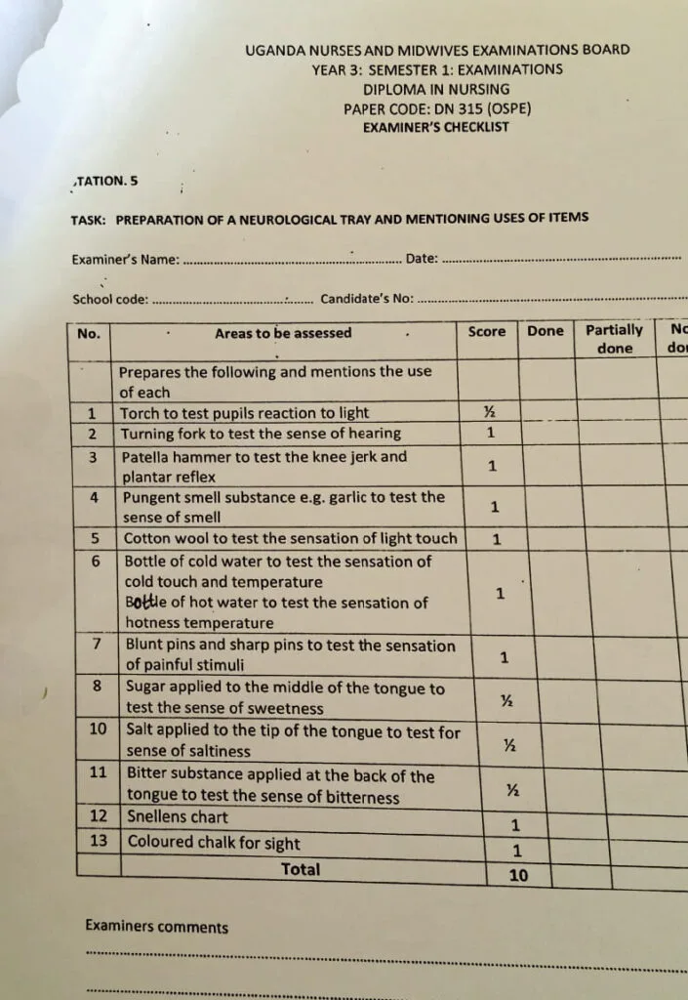
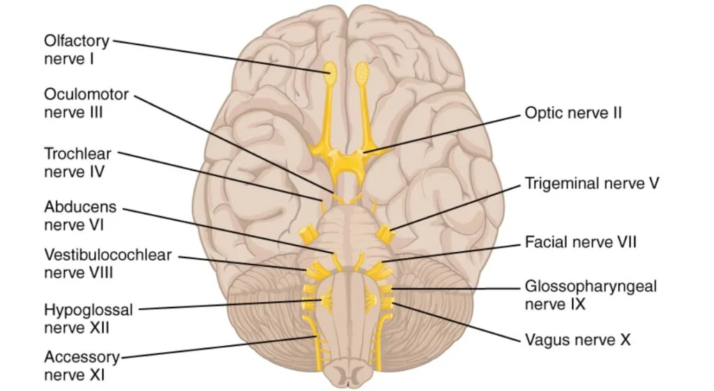
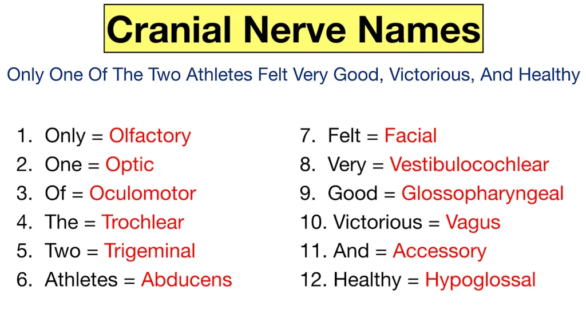
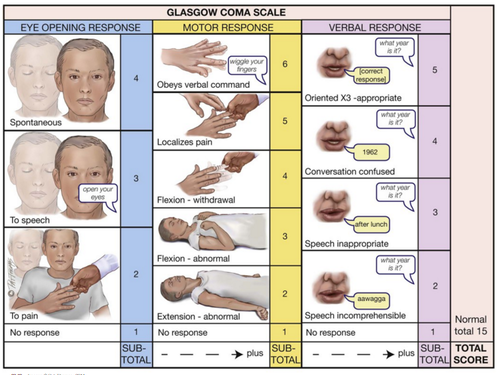

Expanded Nursing Uganda Explanation
Prepare for neural assessment should be understood beyond a short definition. Link the concept to patient history, focused assessment, common risks, nursing priorities, documentation and evaluation of outcomes.
Contents, 15 sections (tap to expand)
01 NEUROLOGICAL EXAMINATION
Neurological examination is a type of patient assessment which aims at detecting the functions of the cranial nerves in relation to the five senses.
What is a neurological exam?
A neurological exam , also called a neuro exam , is an evaluation of a person’s nervous system .
This examination aims to detect abnormalities in cranial nerve function , which are responsible for controlling the body’s five primary senses :
- Sight (Vision) – Assessed through eye movement, visual fields, and pupillary reflex.
- Hearing (Audition) – Tested using tuning forks or audiometry to determine sound perception.
- Smell (Olfaction) – Evaluated by identifying different scents to assess olfactory nerve function.
- Taste (Gustation) – Checked by applying various taste stimuli to different parts of the tongue.
- Touch (Somatosensation) – Includes tests for pain, temperature, vibration, and proprioception.
It is also an evaluation of a person’s nervous system . The nervous system consists of the brain , the spinal cord , and the nerves from these areas.
02 Key Components of a Neurological Exam
There are many aspects of this exam, including an assessment of motor and sensory skills , balance and coordination , mental status (the patient’s level of awareness and interaction with the environment), reflexes , and functioning of the nerves.
- Mental Status Examination : Evaluates cognition, memory, orientation, and language skills. Includes tests such as recalling words, following commands, and responding to questions.
- Cranial Nerve Assessment : Examines the twelve cranial nerves, responsible for functions like facial movement, swallowing, and vision.
- Motor Function and Muscle Strength : Tests muscle tone, strength, and involuntary movements. Evaluates for conditions like paralysis, muscle atrophy, or tremors.
- Reflexes : Assesses deep tendon reflexes (e.g., knee-jerk reflex), Babinski reflex, and other involuntary responses. Used to detect spinal cord or nerve root damage.
- Coordination and Balance : Includes tests such as the finger-to-nose test, heel-to-shin test, and Romberg test. Assesses cerebellar function and motor control.
- Gait Analysis (Walking Assessment) : Observes walking patterns, step length, and postural stability. Used to detect conditions like Parkinson’s disease, ataxia, or nerve damage.
- Sensory Function Evaluation: Checks the ability to feel pain, temperature, vibration, and proprioception. Helps diagnose neuropathies, spinal cord disorders, or stroke-related sensory loss.
03 Indications for a Neurological Exam
A complete neurological exam may be performed in the following situations:
Routine Physical Exam : As part of a general health assessment, especially in older adults or individuals with risk factors for neurological disorders.
Post-Trauma : Following any head, neck, or back injury, regardless of severity, to rule out potential neurological damage.
Disease Progression Monitoring : To track the progression of known neurological conditions such as multiple sclerosis, Parkinson’s disease, or dementia. It helps in adjusting treatment plans and assessing the effectiveness of interventions.
Specific Neurological Complaints : When a patient presents with any of the following symptoms:
- Headaches : Especially new-onset, severe, persistent, or accompanied by other neurological symptoms.
- Visual Disturbances : Including blurry vision, double vision, loss of vision, or visual field defects.
- Behavioral or Cognitive Changes : Such as memory loss, confusion, personality changes, or difficulty with language.
- Unexplained Fatigue : Persistent and excessive tiredness that interferes with daily activities.
- Balance or Coordination Problems : Including dizziness, vertigo, unsteadiness, or difficulty with fine motor skills.
- Sensory Abnormalities : Numbness, tingling, burning, or pain in the limbs or other parts of the body.
- Motor Weakness : Reduced strength or difficulty moving limbs, facial muscles, or other body parts.
- Involuntary Movements : Tremors, tics, spasms, or other abnormal movements.
- Seizures : Any type of seizure activity, including new-onset seizures or changes in seizure patterns.
- Speech Difficulties : Slurred speech, difficulty finding words, or problems with comprehension.
- Back Pain : particularly when associated with weakness, numbness, or bowel or bladder dysfunction.
Altered Mental Status: To evaluate changes in alertness, orientation, or level of consciousness. This includes:
- Assessment of Consciousness : Evaluating levels of alertness, responsiveness, and orientation in patients with altered mental status.
Sensory Evaluation : Detailed assessment to evaluate:
- Paresthesia : To determine the location, severity, and nature of abnormal sensations.
Cranial Nerve Assessment: To evaluate:
- Cranial Nerve Function : Systematic testing of each of the twelve cranial nerves to identify deficits.
Important Points to Note:
When performing the exam, ensure that substances used to assess taste, smell, touch, or feeling are not visible to the patient . This prevents the patient from identifying the substance by sight, which could lead to inaccurate results.
04 Equipment for the Procedure:
- Ophthalmoscope or Torch : To assess pupil dilation and constriction (eye reaction).
- Snellen Chart : For visual acuity testing.
- Otoscope : For ear examination.
- Tuning Fork : To evaluate hearing.
- Pins or Needles : For testing sense of touch (e.g., pain or sensation loss).
- Cotton Wool (in a gallipot) : For tactile sensation.
- Hot/Cold Water Bottle : To assess the sense of touch and taste.
- Salt and Sugar Bottles : For taste assessment.
- Coffee or Lemon Bottle : For smell testing.
- Nasal Speculum : For nasal inspection.
- Tape Measure : To measure areas with sensory loss.
- Skin Pencil : To mark areas with no sense of touch.
- Patellar Hammer: For tendon and motor reflex testing.
Note: If assessing a patient’s gait, have them walk to observe their movements.
05 Bedside Equipment:
- Hand-washing materials
- Privacy screen
- Safety box
- Adequate bedside lighting
06 TASK: PREPARATION OF A NEUROLOGICAL TRAY AND MENTIONING USES OF ITEMS
- No. Areas to be assessed Score Done Partially Done Not Done
- 1 Prepares the following and mentions the use of each
- – Torch to test pupils’ reaction to light ½
- 2 – Tuning fork to test the sense of hearing 1
- 3 – Patella hammer to test the knee jerk and plantar reflex 1
- 4 – Pungent smell substance e.g. garlic to test the sense of smell 1
- 5 – Cotton wool to test the sensation of light touch 1
- 6 – Bottle of cold water to test the sensation of cold touch and temperature 1
- 7 – Bottle of hot water to test the sensation of hotness temperature 1
- – Blunt pins and sharp pins to test the sensation of painful stimuli
- 8 – Sugar applied to the middle of the tongue to test the sense of sweetness ½
- 10 – Salt applied to the tip of the tongue to test the sense of saltiness ½
- 11 – Bitter substance applied at the back of the tongue to test the sense of bitterness ½
- 12 – Snellen’s chart 1
- 13 – Colored chalk for sight 1
- Total 10
Components of a Neurological Exam
The neurological exam typically includes the following assessments:
07 Mental Status:
- Level of Awareness : Assessed through conversation to determine the patient’s awareness of person, place, and time.
- Attentiveness : Evaluate whether the patient stays focused or requires frequent redirection.
- Orientation : Check orientation to self, place, and time. Disorientation to time typically occurs before place or person, and disorientation to self often indicates a psychiatric issue.
- Speech and Language: Assess fluency, repetition, comprehension, reading, writing, and naming.
- Memory : Evaluate both registration and retention capabilities.
- Higher Intellectual Function : Assess general knowledge, abstraction, judgment, insight, and reasoning abilities.
- Mood and Affect : Evaluate mood and emotional expression, primarily to determine if psychiatric conditions are affecting the neurological assessment.
CLICK HERE FOR MORE ABOUT MENTAL STATE EXAMINATION
08 Evaluation of the cranial nerves:
There are 12 cranial nerves. During a complete neurological exam, most of these nerves are evaluated to help determine the functioning of the brain:
- Cranial nerve I (olfactory nerve) : This is the nerve of smell. The patient may be asked to identify different smells with his or her eyes closed.
- Cranial nerve II (optic nerve) : This nerve carries vision to the brain. A visual test may be given and the patient’s eye may be examined with a special light.
- Cranial nerve III (oculomotor) : This nerve is responsible for pupil size and certain movements of the eye. The patient’s healthcare provider may examine the pupil (the black part of the eye) with a light and have the patient follow the light in various directions.
- Cranial nerve IV (trochlear nerve) : This nerve also helps with the movement of the eyes.
- Cranial nerve V (trigeminal nerve) : This nerve allows for many functions, including the ability to feel the face, inside the mouth, and move the muscles involved with chewing. The patient’s healthcare provider may touch the face at different areas and watch the patient as he or she bites down.
- Cranial nerve VI (abducens nerve) : This nerve helps with the movement of the eyes. The patient may be asked to follow a light or finger to move the eyes.
- Cranial nerve VII (facial nerve) : This nerve is responsible for various functions, including the movement of the face muscle and taste. The patient may be asked to identify different tastes (sweet, sour, bitter), asked to smile, move the cheeks, or show the teeth.
- Cranial nerve VIII (acoustic nerve) : This nerve is the nerve of hearing. A hearing test may be performed on the patient.
- Cranial nerve IX (glossopharyngeal nerve) : This nerve is involved with taste and swallowing. Once again, the patient may be asked to identify different tastes on the back of the tongue. The gag reflex may be tested.
- Cranial nerve X (vagus nerve) : This nerve is mainly responsible for the ability to swallow, the gag reflex, some taste, and part of speech. The patient may be asked to swallow and a tongue blade may be used to elicit the gag response.
- Cranial nerve XI (accessory nerve ) : This nerve is involved in the movement of the shoulders and neck. The patient may be asked to turn his or her head from side to side against mild resistance, or to shrug the shoulders.
- Cranial nerve XII (hypoglossal nerve) : The final cranial nerve is mainly responsible for movement of the tongue. The patient may be instructed to stick out his or her tongue and speak.
09 Nurses role in neurological examination
- Provide a clam, suitable environment
- Collect the personal data with patient & family members
- Set the equipment needed for neurological examination
- Assess the current level of consciousness, monitor vital parameters – temperature, pulse, respiration, blood pressure, pupillary reaction, whether decelerating or decorticating.
- Thorough mental status examination should be done & recorded
- Assessment of cranial nerves should be done correctly & recorded.
- Assessment of motor, sensory & cerebellar functions should be done & be recorded accurately.
- During the examination, she should maintain good support with patients & family members.
10 GLASGOW COMA SCALE MONITORING
- EYE OPENING VERBAL RESPONSE MOTOR RESPONSE SCORE
- None None None 1
- Eyes open to pain Incomprehensible speech or sounds Abnormal Extension 2
- Eyes open to verbal Command Inappropriate responses Abnormal Flexion 3
- Eyes open spontaneously Confused conversation Withdrawals from pain 4
- Oriented Localizes pain 5
- Obeys Commands 6
11 GRADING
- A score of 13 above mild Level of Consciousness
- A score between 9-12 moderate Level of Consciousness
- A score below 8 severe Level of Consciousness
12 Nursing Uganda Clinical Lens
Use Prepare for neural assessment as a practical nursing topic, not only a memorized definition. Turn the topic into practical nursing knowledge: meaning, assessment, care priorities, teaching and evaluation.
- What to understand first: define prepare for neural assessment, identify the normal or expected pattern, then explain what changes when the patient is unwell.
- Why it matters in care: the nurse must recognize risk early, explain findings clearly, document accurately and know when to escalate.
- How to revise it: connect each point to assessment, nursing diagnosis or care problem, intervention, rationale and evaluation.
13 Assessment Guide
- Key definitions, patient history, focused observations and risk factors.
- Findings that are normal, abnormal or urgent.
- Resources, referral needs and documentation requirements.
14 Nursing Priorities, Rationales and Outcomes
- Protect safety, comfort, dignity and infection prevention.
- Provide clear care, education and escalation when needed.
- Evaluate response and record what changed.
The rationale for these priorities is patient safety: nursing actions should prevent deterioration, reduce discomfort, support recovery and create clear evidence for the next caregiver.
- Expected outcome: The topic is understood in a way that supports safe nursing judgement and revision.
15 Patient Teaching and Revision Check
- Explain prepare for neural assessment in simple language the patient or caregiver can repeat back.
- Teach warning signs, medicine or follow-up instructions, hygiene or lifestyle points where relevant.
- For exams, prepare a short answer using: definition, causes or risk factors, signs, assessment, management, complications and prevention.
- For ward practice, document baseline findings, actions taken, patient response and the plan for review.
Illustrations and Diagrams (14)







6 more diagrams available, open the lesson for full illustrations.
Related Video Lectures
Watch nursing lecture videos on YouTube for this topic. Opens in a new tab.
Watch on YouTubeExternal link: YouTube may use its own cookies and terms. Nursing Uganda is not affiliated with YouTube.